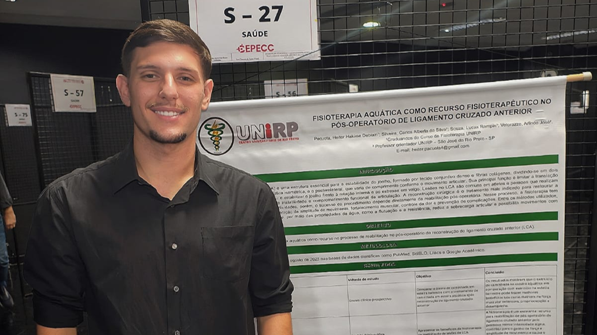
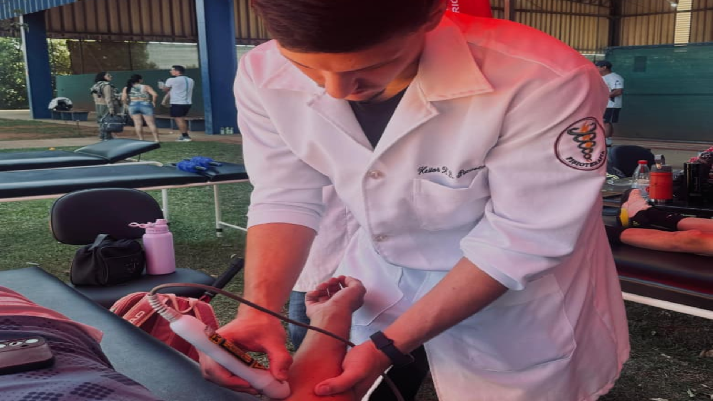
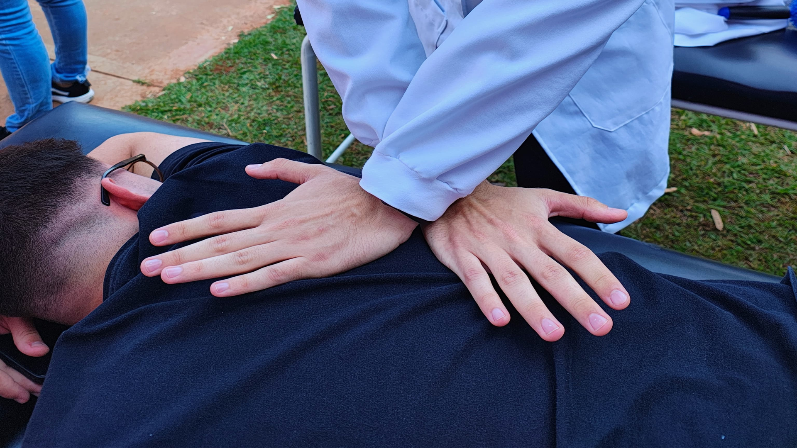

Fisioterapeuta em José Bonifácio especializado em fisioterapia esportiva, ortopédica e reabilitação.
Sou fisioterapeuta com foco em potencializar o desempenho físico, prevenir lesões e acelerar a recuperação de atletas e praticantes de atividade física, sem deixar de oferecer um atendimento humanizado e individualizado. Atuo com reabilitação e prevenção esportiva, atendimento domiciliar, saúde do idoso e acompanhamento em pré e pós-operatório ortopédico. Cada tratamento é planejado de forma personalizada, utilizando técnicas baseadas em evidências para restaurar a funcionalidade, melhorar a mobilidade, aumentar a eficiência dos movimentos e proporcionar uma recuperação segura, permitindo que cada paciente retorne às suas atividades com mais confiança, desempenho e qualidade de vida.
Prevenção de lesões, reabilitação e melhora da performance para atletas e praticantes de atividade física.
Tratamento no conforto da sua casa, com atendimento personalizado e focado na sua recuperação.
Acompanhamento especializado para acelerar a recuperação, reduzir dores e recuperar os movimentos.
Cuidados voltados à mobilidade, equilíbrio, fortalecimento muscular e promoção da qualidade de vida.

Acredito na evolução constante da fisioterapia por meio da ciência e da prática clínica. Busco aprimorar meus conhecimentos através de pesquisas e congressos, aplicando protocolos baseados em evidências para oferecer tratamentos seguros, modernos e personalizados, ajudando cada paciente a recuperar movimentos e alcançar seus objetivos.

No esporte de alto rendimento, cada detalhe faz diferença. Utilizo recursos como fotobiomodulação e laserterapia para auxiliar no controle da dor, recuperação muscular e otimização da regeneração, unindo tecnologia, ciência e experiência prática para prevenir lesões e potencializar a performance dos atletas.

No ambiente esportivo, cada detalhe importa. Minha atuação na fisioterapia de campo utiliza técnicas manuais e estratégias de mobilidade para preparar o corpo do atleta, reduzir limitações e otimizar o desempenho. Com uma abordagem individualizada, busco melhorar a qualidade dos movimentos, corrigir desequilíbrios biomecânicos e proporcionar mais segurança durante treinos e competições.
Atendimento fisioterapêutico em José Bonifácio, com foco em recuperação de lesões, fisioterapia esportiva e qualidade de vida.